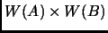

Next:
Conventional Multiplication
Up:
Wavelet Matrix Multiplication
Previous:
Wavelet Matrix Multiplication
A
example
Subsections
Conventional Multiplication
Wavelet Transform of two
2 matrices
Product of A and B in wavelet space
What is 
Daniel Beatty 2003-06-03